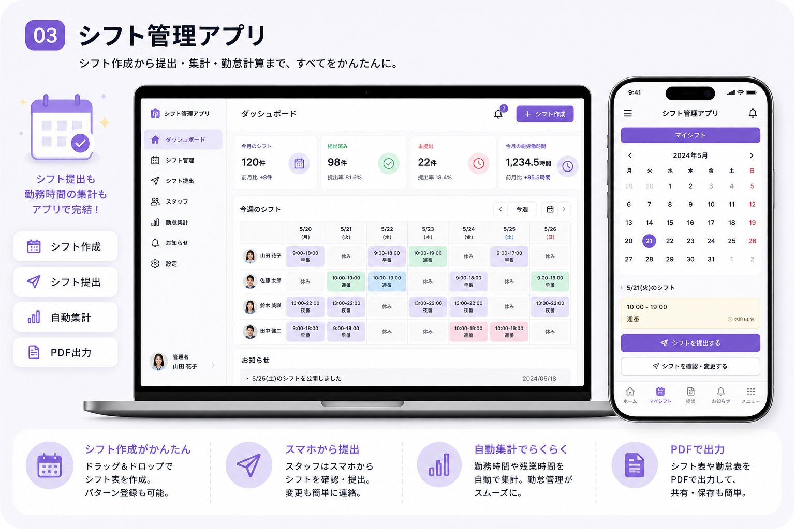

結論｜AIでシフト作成を自動化すると、店長の負担を大きく減らせる可能性があります
先に結論からお伝えすると、シフト作成の一部をAI・シフト管理アプリに任せることで、これまで手作業で行っていた希望の集計や人数調整にかかる時間を減らせる可能性があります。スタッフ10名前後の店舗であれば、月間で数時間分の作業時間が削減できたと感じるケースも珍しくありません。
ただし、AIがすべてを自動で完結させてくれるわけではありません。最終的な確認や、急な欠勤への対応、スタッフ間の細かな事情への配慮は、これまでどおり店長や責任者の判断が必要です。AIはあくまで「たたき台を高速で作る」「集計・共有の手間を減らす」役割を担うものと捉えるのが実態に近い理解です。
この記事では、AIシフト作成の仕組みから、向いている業種、選び方、費用感まで順番に解説していきます。
なぜシフト作成に時間がかかるのか
シフト作成が負担になりやすいのには、いくつかの共通した理由があります。
- スタッフから希望をLINEや紙、口頭など複数の手段で集めており、確認に手間がかかる（回収方法の比較は希望シフトの回収を効率化する方法で解説しています）
- 希望を一覧化した上で、必要人数や時間帯のバランスを見ながら手作業で組み合わせている
- 確定後もキャンセルや変更が発生し、その都度スタッフ全員へ再連絡している
- 作成したシフトから、労働時間や人件費を別途集計し直している
- 店舗が複数ある場合、店舗ごとに同じ作業を繰り返している
特に、スタッフの人数が多い店舗や、アルバイト・パート比率が高い業種では、希望条件の組み合わせが多くなり、手作業での調整に想定以上の時間がかかりがちです。営業時間が終わったあとに、店長がひとりでパソコンや紙に向き合ってシフトを組む、という光景は多くの現場で見られます。
AIシフト自動作成とは
AIシフト自動作成とは、スタッフの希望条件や必要人数、労働条件などのデータをもとに、AI・自動計算のロジックがシフト表のたたき台を作成する仕組みのことです。多くのサービスでは、次のような流れで動作します。
- スタッフがスマートフォンから、勤務可能な曜日・時間帯の希望を提出する
- 店舗側が、時間帯ごとに必要な人数や役割条件を設定する
- AI・自動計算エンジンが、希望条件と必要人数を突き合わせてシフト表の候補を作成する
- 店長・責任者が候補を確認し、必要に応じて調整してから確定・共有する
単純な「自動割り当て」だけでなく、労働基準に関わる条件（休憩時間や連続勤務日数など）をあらかじめ設定できるサービスも増えており、条件を守った組み合わせを優先的に提案してくれるものもあります。ただし、対応できる条件の細かさはサービスによって差があるため、自店舗で重視したいルールに対応しているかどうかは事前に確認が必要です。
AIシフト作成でできること
一般的なAIシフト作成サービス・アプリでは、主に次のようなことができます。
希望シフトの提出・集計の自動化
スタッフがスマートフォンから希望を提出すると、自動的に一覧として集計されます。LINEのメッセージや紙の提出用紙をひとつずつ確認して転記する作業が不要になります。
シフト表のたたき台の自動作成
提出された希望と必要人数をもとに、シフト表の候補を自動で作成します。ゼロから手作業で組む場合に比べて、たたき台ができるまでの時間を大きく短縮できます。
労働時間・人件費の自動集計
確定したシフトをもとに、スタッフごとの労働時間や、店舗全体の人件費見込みを自動で集計できるサービスもあります。エクセルへ手入力で転記する手間を減らせます。
シフト変更の共有・通知
シフトの変更があった際、対象のスタッフへ自動で通知を送れる機能を持つサービスもあります。連絡漏れや、誰が確認したか分からなくなるといった問題を減らしやすくなります。
PDF・CSVでの出力
作成したシフト表や勤怠データをPDFやCSVで出力できる機能も一般的です。給与計算ソフトや会計ソフトへの連携がしやすくなります。

AIシフト作成のメリット
AIによるシフト作成の自動化には、主に次のようなメリットがあります。
- 希望の集計からシフト表作成までの時間を短縮できる可能性がある
- スタッフ自身がスマートフォンから希望を提出・確認できるため、店長側の確認の手間が減る
- 労働時間や人件費の集計を自動化することで、転記ミスのリスクを減らせる
- 変更・通知のやり取りが一元化され、伝達漏れを防ぎやすくなる
- 店長自身の残業や、営業時間外の作業時間を減らせる可能性がある
効果の度合いは、店舗の規模やスタッフ数、これまでの運用方法によって異なります。あくまで一般的な傾向として捉えていただければと思います。
導入前に知っておきたい注意点
良い面だけでなく、導入前に理解しておきたい点もあります。
すべてを自動で完結できるわけではない
AIが作成するのはあくまでたたき台です。急な欠勤対応や、スタッフ間の細かな相性・事情への配慮は、引き続き店長や責任者の判断が必要になります。
初期設定に一定の時間がかかる
必要人数や時間帯、労働条件などをシステムに登録する初期設定には、ある程度の時間がかかります。導入直後から完全に手離れするわけではない点は理解しておく必要があります。
スタッフ側の操作に慣れが必要
スマートフォンの操作に不慣れなスタッフがいる場合、提出方法の説明や、しばらくの間のフォローが必要になることがあります。
サービスによって対応できる条件に差がある
休憩時間の自動計算や、連続勤務日数の制限など、対応できる労働条件の細かさはサービスによって異なります。自店舗で重視したい条件に対応しているかどうかは、事前に確認しておくことをおすすめします。
こんな店舗・業種におすすめ
AIシフト作成は、特に次のような店舗・業種で効果を実感しやすい傾向があります。
| 業種・店舗タイプ | シフト作成が負担になりやすい理由 |
|---|---|
| 飲食店 | アルバイト比率が高く、曜日・時間帯ごとの希望が細かく分かれやすい |
| 小売・アパレル店舗 | 複数店舗をひとりの店長・エリアマネージャーが兼任することが多い |
| クリニック・整体院・美容室 | 予約状況に合わせてスタッフの配置を調整する必要がある |
| コールセンター・受付業務 | 時間帯ごとの必要人数の変動が大きい |
| 多店舗展開している事業者 | 店舗ごとに同じ作業を繰り返しており、まとめて効率化しやすい |
飲食店向けのAI活用については、シフト管理以外の業務も含めて飲食店でAIを活用する方法｜シフト・予約・売上・在庫管理を効率化でも解説していますので、あわせてご参照ください。
おすすめな人
スタッフ数が多い店舗、複数店舗を兼任している店長、シフト作成に営業時間後の時間を多く使っている店舗には、AIシフト作成の導入がおすすめです。
向いていない人
スタッフが数名程度で、これまでの手作業で特に負担を感じていない店舗の場合、無理に導入する必要はありません。まずは希望シフトの回収方法など、部分的な効率化から検討する方法もあります。
AIシフト作成ツールの選び方
数あるサービスの中から自店舗に合うものを選ぶ際は、次のポイントを確認してみてください。
操作のしやすさ
店長・責任者だけでなく、スタッフ全員が使うものです。年齢層や機器の扱いに慣れていないスタッフがいる場合は、操作画面がシンプルかどうかを事前に確認しておくと安心です。
自店舗の労働条件に対応しているか
休憩時間の設定、連続勤務日数の制限など、自店舗で重視したいルールに対応しているかどうかを確認しましょう。
既存の勤怠・給与システムと連携できるか
すでに勤怠管理や給与計算のシステムを使っている場合、データの連携や出力形式が対応しているかどうかも重要な確認ポイントです。
サポート体制があるか
導入時や運用中に困ったときに、問い合わせできる窓口があるかどうかも選定の際に確認しておきたい点です。
費用が店舗規模に見合っているか
スタッフ数に応じた料金体系のサービスが多いため、店舗の規模に見合った費用かどうかを確認しましょう。詳しくは後述の費用相場もご参照ください。
導入の流れ
AIシフト作成を導入する場合、一般的には次のような流れで進めます。
- 現在のシフト作成の流れと、負担になっている部分を整理する
- 必要な機能（希望提出、自動集計、通知、勤怠連携など）を洗い出す
- 候補となるサービスを比較検討する
- 必要人数・時間帯・労働条件などの初期設定を行う
- スタッフへ使い方を説明し、試験的に運用を始める
- 運用しながら設定を調整し、本格運用へ移行する
いきなり全店舗・全業務で導入するのではなく、まずは1店舗、あるいはシフト作成のみといった限定的な範囲から試すことで、無理なく運用に慣れていくことができます。
費用相場の目安
AIシフト作成・シフト管理アプリの費用は、サービスの機能や対応人数によって幅があります。一般的な傾向として、月額数千円程度から利用できるものもあれば、勤怠管理や給与計算までまとめて対応する高機能なものでは月額数万円程度になるサービスもあります。多くのサービスは、スタッフ数に応じた従量課金制を採用しています。
既存のシフト管理アプリを利用するのではなく、自社の運用に合わせたオーダーメイドのシステムを開発する場合は、初期費用が別途発生します。既存サービスとオーダーメイド開発、どちらが自店舗に合っているかの判断基準はAI導入はオーダーメイドと既存サービス、どちらを選ぶべき？で詳しく解説しています。開発費用の相場感についてはAI開発の費用相場｜オーダーメイドと既存ツールを比較もあわせてご参照ください。シフト作成AIに特化した費用の内訳やスタッフ規模別の目安はシフト作成AIの費用相場で詳しく解説しています。
大阪・心斎橋でシフト作成にお悩みの店舗へ
大阪・心斎橋周辺には、飲食店やアパレル、美容関連など、アルバイト・パートスタッフを多く抱える店舗が集まっています。人手不足が続く中で、限られた人数のシフトを調整する負担は、多くの店長にとって共通の悩みです。
特に心斎橋のような繁華街エリアでは、曜日や時間帯によって必要な人数が大きく変動しやすく、希望条件の調整も複雑になりがちです。大阪でシフト作成の負担を減らしたいと考えている店舗にとって、AI・シフト管理アプリの活用は検討する価値のある選択肢のひとつです。
マダナイ？でできるシフト作成の効率化支援
マダナイ？では、AI導入・活用支援の一環として、実際にシフト管理アプリの初期設定や運用サポートを行っています。設定作業を代行する中で、スタッフ数や店舗形態によって適したプラン・設定内容が大きく異なることを日々実感しており、この記事の内容にもその経験を反映しています。
マダナイ？では、既存のシフト管理アプリの選定・導入サポートだけでなく、自店舗の運用に合わせたオーダーメイドの仕組みづくりについてもご相談いただけます。
- 現在のシフト作成の流れをヒアリングし、負担になっている部分を整理
- 既存サービスで対応できるか、オーダーメイド開発が必要かのご提案
- 勤怠・給与システムとの連携方法のご相談
- AI導入・活用支援サービスとあわせたご相談
「まだない」を「もうある」へ。シフト作成にかかる時間を少しでも減らしたいという段階でも構いませんので、まずは現在の運用状況をお聞かせください。実際の業務へ導入したい方はAI導入支援でできること、費用の目安は料金ページでもご確認いただけます。
よくある質問
Q. AIでシフトを作ると、完全に自動でシフトが完成しますか？
いいえ、完全に自動で完結するわけではありません。AIが作成するのはあくまでたたき台であり、急な欠勤対応やスタッフ間の事情への配慮など、最終的な確認・調整は店長や責任者が行う必要があります。
Q. どれくらいの規模の店舗から導入する価値がありますか？
明確な目安があるわけではありませんが、スタッフ数が多く、希望条件の組み合わせが複雑になりやすい店舗ほど効果を実感しやすい傾向があります。数名程度の小規模店舗でも、集計や通知の手間を減らす目的で導入されるケースもあります。
Q. 既存のシフト管理アプリと、オーダーメイド開発はどちらがいいですか？
一般的な機能で対応できる場合は既存サービスの活用がスムーズです。自社独自の運用フローがある場合は、オーダーメイド開発を検討する価値があります。判断基準はAI導入はオーダーメイドと既存サービス、どちらを選ぶべき？で詳しく解説しています。
Q. スタッフがスマートフォン操作に慣れていなくても導入できますか？
操作がシンプルなサービスを選び、導入時に使い方を丁寧に説明することで、多くの場合は運用に慣れていただけます。不安がある場合は、事前にサービスの操作性を確認しておくことをおすすめします。
Q. 複数店舗でも導入できますか？
多くのサービスは複数店舗での利用に対応しています。店舗ごとに必要人数や条件を分けて設定できるものもあるため、多店舗展開している事業者ほど効率化の効果を実感しやすい傾向があります。
Q. 導入までにどれくらいの期間がかかりますか？
サービスの種類や初期設定の内容によって異なります。既存サービスであれば比較的短期間で利用を開始できる場合が多く、オーダーメイド開発の場合は要件によって期間が変わります。
Q. 労働基準に関わるルール（休憩時間など）も自動で守ってくれますか？
休憩時間や連続勤務日数の制限などをあらかじめ設定できるサービスもありますが、対応できる条件の細かさはサービスによって異なります。自店舗で重視したいルールに対応しているかどうかは、事前に確認することをおすすめします。
Q. 費用はどれくらいかかりますか？
既存サービスの場合、スタッフ数に応じた月額課金制が一般的で、サービスによって料金体系は異なります。オーダーメイド開発の場合は別途初期費用が発生します。詳しくはAI開発の費用相場の記事もご参照ください。
Q. マダナイ？ではどんなサポートが受けられますか？
現在のシフト作成の流れのヒアリングから、既存サービスの選定サポート、自社運用に合わせたオーダーメイド開発のご相談まで対応しています。まずは現在の運用状況をお聞かせください。
Q. AIシフト作成とは、具体的にどんな技術を使っていますか？
スタッフの希望条件と必要人数を突き合わせ、条件を満たす組み合わせを計算するアルゴリズムが中心です。近年は生成AIの技術を組み合わせ、より柔軟な条件設定に対応するサービスも増えています。
Q. アルバイト・パートスタッフが多い店舗でも問題なく使えますか？
むしろアルバイト・パート比率が高く、希望条件の組み合わせが複雑な店舗の方が、効果を実感しやすい傾向があります。
Q. 既に使っているシフト表（Excelなど）からの移行は大変ですか？
初期設定として、現在の必要人数や勤務条件を新しいサービスに登録し直す作業は発生します。ただし、多くのサービスは初期設定のサポートを提供しているため、ゼロから独力で行う必要はありません。
まとめ
AIによるシフト作成の自動化は、希望の集計やシフト表のたたき台作成にかかる時間を減らせる可能性がある一方で、すべてを自動で完結できるわけではありません。最終的な確認や、急な変更への対応は、引き続き店長や責任者の役割として残ります。
大切なのは、AIに任せる部分と、これまでどおり人が判断する部分を切り分けて考えることです。自店舗のどこにシフト作成の負担が集中しているのかを整理し、まずは限定的な範囲から試してみることが、無理なく導入を進める近道になります。
シフト作成以外にも、AI導入を検討する際に見直しておきたい業務については小さな会社がAIを導入するときに最初に見直したい業務5選でも解説しています。あわせてご参照ください。
この記事のポイント
- AIシフト作成は「たたき台の高速作成」「集計・共有の効率化」が中心的な役割
- 最終確認や急な変更対応は、引き続き店長・責任者の判断が必要
- アルバイト・パート比率が高い店舗、多店舗展開の事業者ほど効果を実感しやすい
- 既存サービスとオーダーメイド開発では費用の性質が異なる
- まずは1店舗・一部業務など、限定的な範囲から試すのがおすすめ
- 希望シフトの「回収」だけを効率化したい場合は、別のアプローチもある